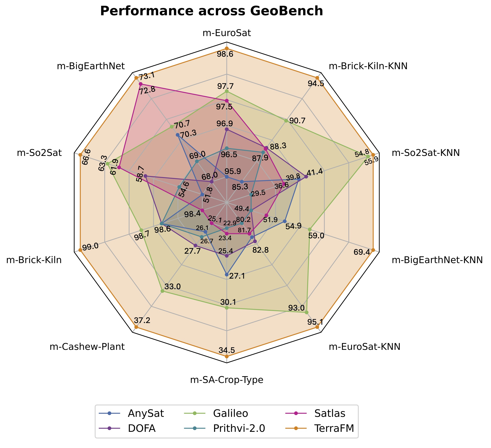
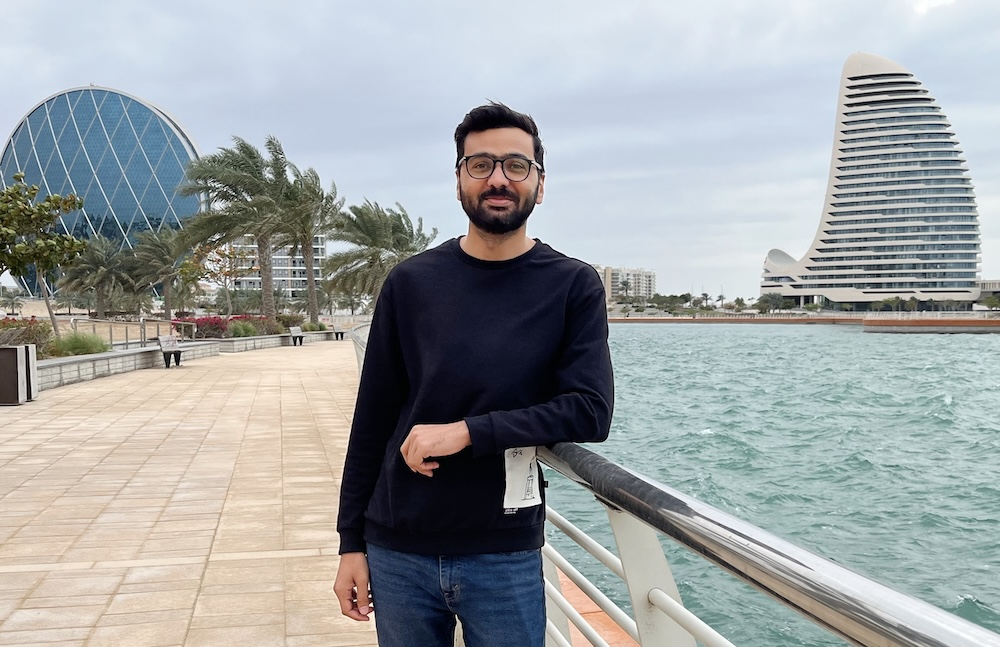
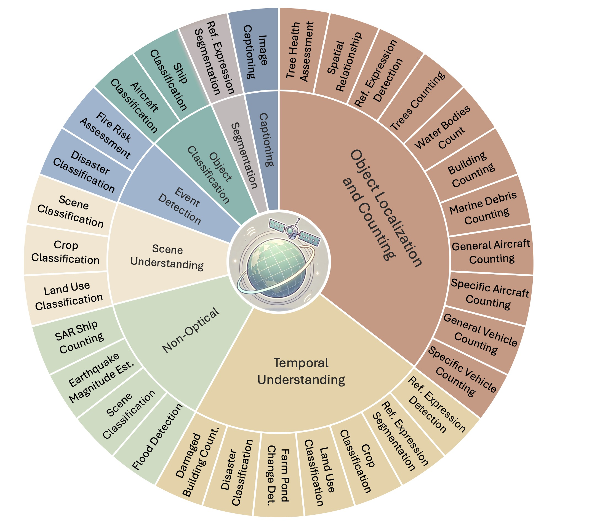
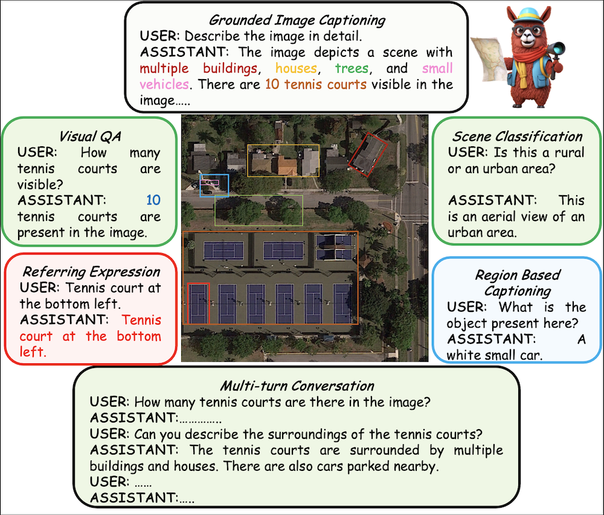
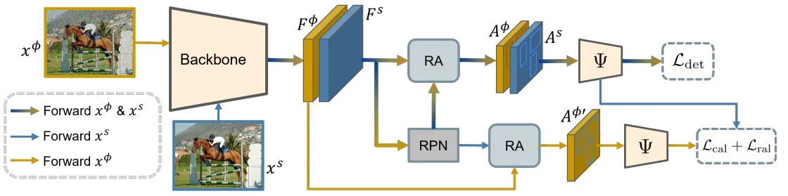
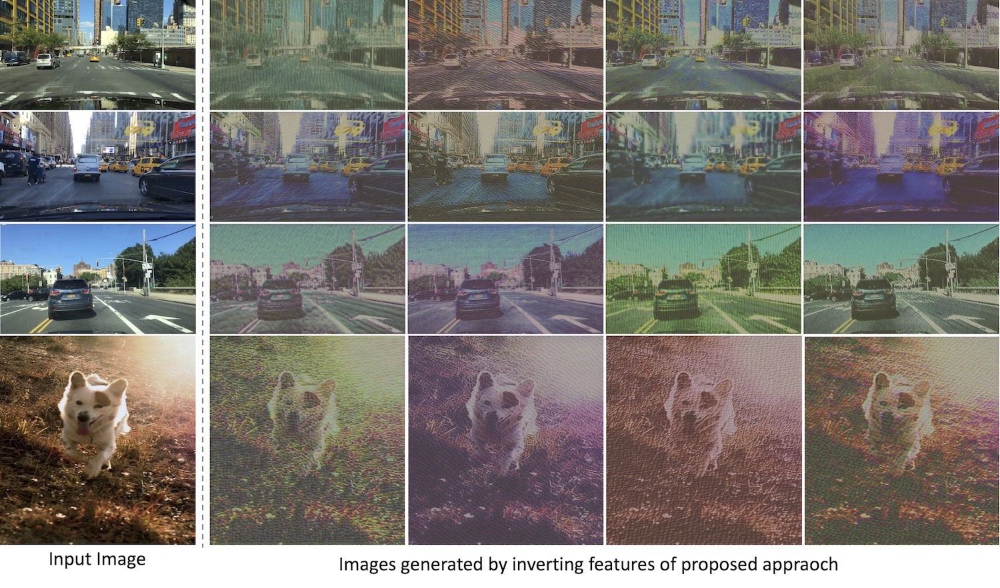
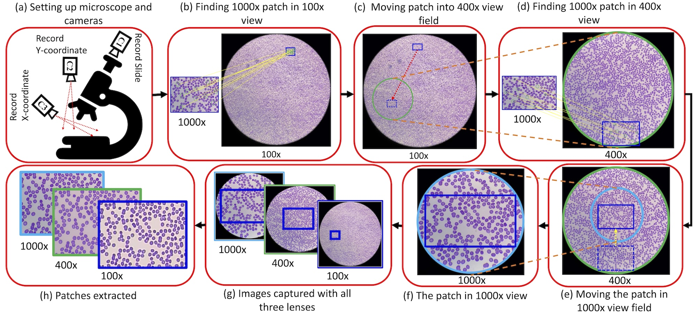
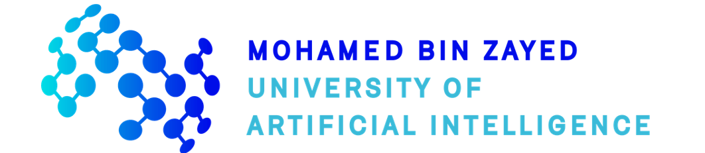

Muhammad Sohail Danish Building Multimodal Foundation Models for Earth Observation
PhD candidate at MBZUAI, advised by Dr. Salman Khan, working on geospatial foundation models, multisensor representation learning, and vision-language models for Earth observation. My research focuses on building large-scale models that understand optical, SAR, multispectral, and temporal satellite imagery.
Currently, I am a PhD Resident at Microsoft’s AI for Good Lab, developing multimodal multi-agents that combine spatial analytics with vision-language reasoning for querying geospatial, vector, and satellite imagery data.

Currently Building
Multi-Agent Geospatial AI SystemsTimeline & News
A timeline of my research milestones, publications, and project updates across my academic and professional journey.
-
Microsoft PhD Residency
Excited to start my PhD residency at Microsoft’s AI for Good Lab.
-
TerraFM preprint released
Posted TerraFM: A Scalable Foundation Model for Unified Multisensor Earth Observation
-
Paper accepted at ICCV 2025 (Highlight)
GEOBench-VLM accepted as an ICCV 2025 Highlight, recognizing our benchmark for evaluating VLMs across diverse remote-sensing modalities.
-
Paper accepted to CVPR 2025
EarthDial accepted to CVPR 2025: a conversational vision-language model for multi-sensory Earth observation
-
Paper accepted at DICTA 2024 (ORAL)
Perturbing Dominant Feature Modes for Single Domain-Generalized Object Detection
-
Started PhD at MBZUAI
Joined the Vision Lab in Abu Dhabi to build geospatial foundation models under Prof. Salman Khan.
-
Joined Intelligent Visual Analytics Lab at MBZUAI
Joined IVA Lab as a Graduate Research Assistant, working on single-domain generalization for object detection under Prof. Muhammad Haris Khan.
-
Completed MS in Data Science (ITU)
Completed my MS in Data Science at ITU with a thesis on single-domain generalization for object detection.
-
Paper accepted at CVPR 2022
Towards Low-cost and Efficient Malaria Detection
Publications & Releases
* represents equal contribution.




DICTA 2024 (Oral)
Perturbing Dominant Feature Modes for Single Domain-Generalized Object Detection

Experience
Aug 2025 – Present · Kenya
Microsoft · PhD Resident Fellow
Designing multi-modal multi-agent system that enables non-technical decision-makers to interact with and query geospatial disaster assessment data.
Aug 2023 – Present · Abu Dhabi
MBZUAI · PhD Researcher
Research on geospatial foundation models and large VLMs; proposed GeoChat, GeoBench-VLM, and TerraFM.
Sep 2022 – Aug 2023 · Abu Dhabi

Intelligent Visual Analytics Lab · Graduate Research Assistant
Developed single-domain generalization in object detection method; introduced alignment losses to improve out-of-domain performance.
Sep 2020 – Aug 2022 · Lahore
Intelligent Machine Lab · Graduate Student Researcher
Explored domain adaptation for medical imaging and face recognition, including the low-cost malaria detection framework.
Sep 2016 – Aug 2020 · Remote
Freelance Web & Mobile Engineer · Fiverr
Delivered 60+ full-stack products leveraging React, React Native, Django, and PostgreSQL with consistent 5★ ratings.
Education
PhD · Computer Vision
MBZUAI · GPA 3.57 / 4.0
Courses: Advanced CV, Advanced 3D CV, LVLMs, Lifelong Learning, Visual Recognition. Focus on geospatial foundation models.
MS · Data Science
Information Technology University · GPA 3.47 / 4.0
Thesis on single-domain generalization for object detection. Funded by Graduate Student Fellowship.
BS · Computer Science
Qurtuba University · GPA 3.97 / 4.0
FYP project: An autonomous drone.
Selected Courses: Object Oriented Programming, Data Structure and Algorithm, Artificial Intelligence, Software Engineering, Mobile Apps development
Talks, Tutorials & Reviewing
-
October 2025
Guest speaker, Saint Mary’s College of California
Shared my research on GeoChat and GeoBench-VLM and LLM Agents for geospatial data.
-
March 2025
Guest speaker, ADIA Lab Research Seminar
Presented GeoChat's design with demos and applied use cases.
-
2023 – Present
Reviewing
ICCV 2023, CVPR 2024, ICCV 2025, CVPR 2025
Technical Skills
Domains
Deep Learning, Computer Vision, Large Language Models, Multi-Modal Learning, Foundation Models, Remote Sensing, Distributed Training
Libraries
PyTorch, TensorFlow, Keras, Scikit-learn, AutoGen
Programming Languages
Python, JavaScript, PHP
Applications & Databases
React, React Native, Redux, Django, Flask, MySQL, PostgreSQL, Firebase